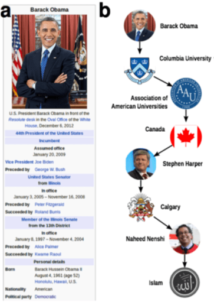

Data publicării: 20.04.2017
Autor articol: Adrian Iftene
Introducere
Popularitatea rețelelor sociale a crescut semnificativ în ultimii ani, iar citirea de noutăți în cadrul acestor rețele a devenit o activitate firească pentru toți utilizatorii. Noutățile se transmit instantaneu în aceste rețele, acestea fiind rapid citite, marcate cu opinii (vezi Facebook), retransmise (retweet pe Twitter, share pe Facebook), fără a se verifica de multe ori dacă ele reprezintă știri adevărate sau false.
Cercetătorii au început în ultimii ani să-și pună problema asupra identificării știrilor false și a credibilității acestora în televiziune și Youtube (Clark, 2009), pe Twitter (Castillo et al., 2011) și (Iozzio, 2016), pe Facebook (Allcott și Gentzkow, 2017), apărând site-uri care instruiesc și ajută utilizatorii, care doresc să identifice știrile false (TenQuestionsForFakeNews).
În continuare vom vedea care sunt cele mai folosite tehnologii în identificarea știrilor false (Conroy et al., 2015). Detectarea știrilor false este definită ca sarcina de a clasifica știrile de-a lungul unui continuum de veridicitate, cu o măsură de certitudine asociată. Lucrarea oferă o tipologie a mai multor metode de evaluare a veridicității care apar din două categorii majore – abordări lingvistice (cu învățare automată) și abordări bazate pe rețele sociale. Abordarea hibridă, care combină învățarea automată din lingvistica computațională, cu abordările bazate pe rețele sociale, pare foarte promițătoare. Deși proiectarea unui sistem care să facă detectarea de știri false nu este o problemă simplă, o să vedem care sunt direcțiile cele mai promițătoare pentru conceperea unui sistem cât mai performant.
În cele ce urmează vom vedea mai în detaliu cele două abordări principale folosite în detectarea de știri false (Conroy et al., 2015).
Abordări lingvistice
Cei mai mulți mincinoși folosesc limba maternă în mod strategic pentru a nu fi prinși. În ciuda încercării de a controla ceea ce spun, “scăpările” apar în câteva aspecte verbale care sunt greu de monitorizat, cum ar fi frecvențele și modelele de utilizare a pronumelor, conjuncțiilor și a cuvintelor ce exprimă sentimente negative (Feng & Hirst, 2013). Scopul abordării lingvistice este de a căuta astfel de cazuri de scăpare sau, așa-numitele “indicii predictive de înșelăciune” ce se găsesc în conținutul unui mesaj.
Reprezentarea datelor
Poate că cea mai simplă metodă de reprezentare a textelor este abordarea bazată pe “bag of words”, care privește fiecare cuvânt ca o unitate, la fel de semnificativă. În această abordare, cuvintele individuale sau “n-gramele” sunt agregate și analizate pentru a dezvălui indicii de înșelăciune. Etichetarea suplimentară a cuvintelor în indicațiile lexicale respective, de exemplu, părți ale vorbirii sau “sintaxa superficială” (Hancock & Markowitz, 2013), dimensiunile afective (Vrij, 2006) sau cuvintele bazate pe localizare (Hancock et al., 2013) sunt modalități de a furniza seturi de frecvențe pentru a dezvălui indicii lingvistice de înșelăciune.
Simplitatea acestei reprezentări, reprezintă de asemenea cel mai mare neajuns. Pe lângă faptul că se bazează exclusiv pe limbă, metoda se bazează pe n-grame izolate, adesea fără a ține cont de informații de context utile. În această metodă, orice rezoluție a sensului ambiguu al unui cuvânt nu mai există (Larcker & Zakolyukina 2012). Mulți cercetători care au lucrat la detecția înșelăciunii au găsit această metodă utilă în combinație cu analize complementare (Zhang, Fan, Zeng & Liu, 2012; Lary, Nikitov & Stone, 2010; Ott, Cardi și Hancock, 2013), câteva dintre ele fiind discutate în continuare.
Sintaxă de tip “deep”
Analiza utilizării cuvintelor nu este suficientă pentru a prezice înșelăciunea. Structurile lingvistice mai avansate (din punct de vedere al sintaxei) au fost analizate pentru a prezice cazuri de înșelăciune. Analiza avansată a sintaxei este implementată prin intermediul gramaticilor de tip PCFG (Probability Context Free Grammars). Propozițiile sunt transformate într-un set de reguli de rescriere (ce funcționează pe arbori de parsare) pentru a descrie structura de sintaxă, de exemplu, fraze substantivale sau verbale, care la rândul lor sunt rescrise în funcție de părțile lor constitutive sintactice (Feng, Banerjee & Choi, 2012). Setul final de rescrieri produce un arbore de parsare cu o anumită probabilitate atașată. Această metodă este utilizată pentru a distinge între diverse tipuri de reguli (lexicalizate, nelexicalizate, noduri părinte etc.) pentru detectarea înșelătoriei cu o precizie de 85-91% (în funcție de de regula utilizată) (Feng et al., 2012).
Printre uneltele care pot fi utilizate în procesul de automatizare amintim parserul Stanford (de Marneffe, MacCartney, Manning, 2006; Rahangdale & Agrawa, 2014) și analizorul de sintaxă AutoSlog-TS (Oraby, Reed, Compton, Riloff, Walker, Whittaker, 2015). De regulă, analiza sintaxei nu este suficientă pentru a identifica înșelăciunea, iar studiile adesea combină această abordare cu alte tehnici de analiză lingvistică sau tehnici de analiză a rețelelor sociale (de exemplu, Feng et al., 2012; Feng & Hirst, 2013).
Analiză semantică
Ca o alternativă la indicii de înșelăciune, semnalele de veridicitate au fost, de asemenea, analizate și evaluate prin caracterizarea gradului de compatibilitate între o experiență personală (de ex., o recenzie a unui hotel) în comparație cu un “profil” de conținut obținut dintr-o colecție de date similare. Această abordare extinde modelul sintactic bazat pe n-grame, prin încorporarea caracteristicilor de compatibilitate a profilului, demonstrându-se că acestă completare îmbunătățește semnificativ performanța de clasificare. (Feng & Hirst, 2013).
Intuiția ne spune că un scriitor care dorește să înșele fără experiență cu un eveniment sau obiect (de exemplu, nu a vizitat niciodată hotelul în cauză) poate include contradicții sau omisiuni ale faptelor prezente în profiluri pe subiecte similare. Pentru recenzii despre produse, un autor al unei recenzii veridice are mai multe șanse de a face comentarii similare despre aspectele produsului ca și alți recenzori veridici. Conținutul extras din cuvintele-cheie este alcătuit din perechi de forma atribut:descriptor. Prin alinierea profilurilor și descrierea experienței personale a scriitorului, evaluarea veridicității este o funcție pe scorurile de compatibilitate: 1. Compatibilitatea cu existența unor aspecte distincte (de exemplu, un muzeu de artă lângă hotel); 2. Compatibilitatea cu descrierea unor aspecte generale, cum ar fi locația sau serviciul. Predicția informațiilor false se dovedește a fi de aproximativ 91% corectă prin această metodă. Deși a fost demonstrat că această metodă este utilă în contextul recenziilor, această metodă a fost limitată până acum doar la acest domeniu. Există două limitări potențiale în această metodă: capacitatea de a determina alinierea dintre atribute și descriptori depinde de o cantitate suficientă de conținut pentru profiluri și de provocarea asocierii corecte a descriptorilor cu atributele extrase.
Structuri retorice și analiză de discurs
La nivelul discursului, reperele de înșelăciune se prezintă atât în comunicarea de tip CMC cât și în conținutul știrilor. O descriere a discursului poate fi obținută printr-o platformă de tip RST (Rhetorical Structure Theory), care identifică instanțe de relații retorice între elementele lingvistice. Diferențele dintre mesajele înșelătoare și cele veridice în ceea ce privește coerența și structura lor au fost combinate cu un model VSM (Vector Space Model) care evaluează poziția fiecărui mesaj în spațiul multi-dimensional RST, în ceea ce privește distanța acestuia față de centrele adevărului și centrele înșelăciunii (Rubin & Lukoianova, 2014). La acest nivel de analiză lingvistică, folosirea proeminentă a anumitor relații retorice poate indica o înșelăciune. Instrumentele de automatizare a clasificării retorice devin disponibile, deși nu sunt încă folosite în contextul evaluării veridicității.
Clasificatori
Seturile de frecvențe de cuvinte și categorii sunt utile pentru analiza automată. O metodă clasică de utilizare este pentru antrenarea “clasificatorilor” ca la SVM (Support Vector Machines) (Zhang et al., 2012) și la modelele Naïve Bayesian (Oraby et al., 2015). Pur și simplu, atunci când un model matematic este antrenat suficient din exemple într-una din cele două categorii, el poate prezice în viitor cazuri de înșelăciune pe baza clusterizării și a distanțelor. Utilizarea diferitelor metode de grupare și a funcțiilor de distanță între date formează precizia SVM (Strehl, Ghosh & Mooney, 2000), care provoacă la realizarea unor noi experimente privind efectul net al acestor variabile. Algoritmii de tip Naive Bayes fac clasificări bazate pe date acumulate reprezentând corelația între o variabilă dată (de exemplu, sintaxa) și celelalte variabile prezente în model (Mihalcea & Strapparava, 2009).
Clasificarea sentimentelor (Pang & Lee, 2008; Ott et al., 2013) se bazează pe intuiția că înșelătorii folosesc neintenționat o comunicare sau judecată emoțională, sau folosește evaluarea stării afective (Hancock, Woodworth, & Porter, 2011). De asemenea, modelele sintactice pot fi folosite pentru a distinge între argumentarea bazată pe sentimente, de argumentarea bazată pe fapte, prin folosirea unor modele asociate stilurilor de argumentație. În studiile de comunicare în afaceri, performanța este semnificativ mai bună decât o estimare aleatorie cu 16%, iar limba înșelătoare prezintă mai puține emoții pozitive (Larcker & Zakolyukina, 2012). Comparația dintre raționamentul uman și clasificatorii SVM a arătat o precizie de 86% pe spam-ul opiniei negative a înșelătorului (Ott et al., 2013). Recenzori falși negativi au generat excese de emoții negative față de recenziile veridice, iar exagerările negative ale acestora au fost elemente ce au putut fi folosite pentru identificarea sentimentelor negative pe încearcă să le transmită.
Aceste abordări lingvistice se bazează pe utilizarea limbajului și pe analiza sa și sunt promițătoare atunci când sunt utilizate în abordări hibride. Cu toate acestea, rezultatele studiilor specifice unui anumit subiect (recenzii despre produse, afaceri) pot avea o generalizabilitate limitată atunci când e vorba de detectarea veridicității știrilor în timp real.
Abordări bazate pe rețele sociale
Inovatoare și variate, folosind proprietățile și comportamentul rețelei sociale, sunt modalități de completare a abordărilor bazate pe conținut care se bazează pe limbajul înșelător și pe indiciile de anticipare a înșelăciunii. Deoarece conținutul în timp real al evenimentelor actuale este din ce în ce mai proliferat prin intermediul aplicațiilor de micro-blogging precum Twitter, instrumentele de analiză a înșelăciunilor sunt cu atât mai importante.
Linked data
Utilizarea rețelelor de cunoștințe poate reprezenta un pas important spre metode scalabile de verificare. Pentru anumite date, “declarațiile” false pot reprezenta o formă de înșelăciune, deoarece pot fi extrase și examinate alături de afirmații care pot fi găsite despre lumea care ne înconjoară. Această abordare utilizează un corpus existent de cunoștințe, cu ajutorul căruia se poate evalua adevărul unor declarații noi. Metoda depinde de interogarea rețelelor de cunoștințe existente sau de date structurate disponibile public, cum ar fi ontologia Dbpedia sau Google Relation Extraction Corpus (GREC).
Rețeaua de date conține entități conectate între ele printr-o relație de tip predicat. Verificarea faptelor poate fi redusă efectiv la o problemă simplă de analiză a rețelei: calculul celei mai scurte căi (Figura 1). Interogărilor ce au la bază extragerea de afirmații le sunt atribuite proximității semantice ca funcție de tranziție dintre subiect și predicat prin intermediul altor noduri. Cu cât nodurile sunt mai apropiate, cu atât este mai mare probabilitatea ca o anumită afirmație subiect-predicat-obiect să fie adevărată.
Există așa-numitele variabile “efecte de rețea” care sunt exploatate pentru a obține probabilități de adevăr (Ciampaglia et al., 2015), astfel încât perspectivele de exploatare a depozitelor structurate de date pentru verificarea afirmațiilor rămân promițătoare. Din lista scurtă a lucrărilor publicate în acest domeniu, rezultatele care utilizează eșantioane din patru domenii diferite variază între 61% și 95%. Succesul a fost măsurat pe baza faptului că mașina a putut să atribuie mai multe valori adevărate declarațiilor adevărate decât celor false (Ciampaglia, et al., 2015). O problemă cu această metodă se datorează faptului că afirmațiile evaluate trebuie să se afle într-o bază de cunoștințe preexistentă.

Comportamentul rețelelor sociale
Autentificarea identității pe social media este de o importanță primordială pentru noțiunea de încredere. Proliferarea știrilor sub forma evenimentelor actuale prin intermediul tehnologiilor de masă, cum ar fi micro-blogurile, oferă modalități de a detecta diferența dintre conținutul fals și cel autentic. În afara analizei conținutului apare utilizarea metadatelor și considerarea surselor discutabile (Chu, Gianvecchio, Wang & Jajodia, 2010). Folosirea recentă a twitter-ului în influențarea percepțiilor politice (Cook et al., 2013) este un scenariu în care anumite date, și anume includerea de hyperlink-uri sau metadate asociate, pot fi compilate pentru a stabili evaluări de veridicitate. CRA (Centering resonance analysis), un mod de analiză a textului într-o rețea socială, reprezintă conținutul unor seturi mari de texte prin identificarea celor mai importante cuvinte care leagă alte cuvinte din rețea socială. Acesta a fost introdusă de Papacharissi & Oliviera pentru a identifica modelele de conținut din postările despre alegerile din Egipt (2012).
Concluzii
Abordările lingvistice și bazate pe rețele sociale au obținut rezultate cu o precizie bună în exercițiile de clasificare în domenii limitate. Ceea ce am prezentat în acest studiu, oferă o bază pentru proiectarea unui instrument adecvat de detectare a știrilor false.
Marile companii, precum Google și Facebook alocă o importanță deosebită acestui fenomen de apariție și răspândire a știrilor false, iar în viitor vor apare metode care să limiteze aceste acțiuni.
Referințe bibliografice
- ***** (2017) Ten questions for (fake) news detection. http://www.thenewsliteracyproject.org/sites/default/files/GO-TenQuestionsForFakeNewsFINAL.pdf (Accessed in April, 2017)
- Allcott, H., Gentzkow, M. (2017) Social Media and Fake News in the 2016 Election. Journal of Economic Perspectives, vol. 31, nr. 2, Spring 2017, pp. 211-236.
- Castillo, C., Mendoza, M., Poblete, B. (2011) Information Credibility on Twitter. WWW 2011 – Session: Information Credibility. March 28–April 1, pp. 675-684, Hyderabad, India.
- Chen, Y., Conroy, N. J., & Rubin, V. L. (2015). News in an Online World: The Need for an “Automatic Crap Detector”. In The Proceedings of the Association for Information Science and Technology Annual Meeting (ASIST2015), Nov. 6-10, St. Louis.
- Chu, Z., Gianvecchio, S., Wang, H., & Jajodia, S. (2010). Who is tweeting on Twitter: Human, Bot, or Cyborg? in the Proceedings of the 26th Annual Computer Security Applications Conference, ACSAC ’10, pp. 21-30.
- Ciampaglia, G., Shiralkar, P., Rocha, L., Bollen, J. Menczer, F., & Flammini, A. (2015). Computational fact checking from knowledge networks.
- Clark, C. S. (2009) Fake news? A survey on video news releases and their implications on journalistic ethics, integrity, independence, professionalism, credibility, and commercialization of broadcast news. The University of Alabama, Tuscaloosa, Alabama, 129 pages.
- Conroy, N. J., Rubin, V. L., Chen, Y. (2015) Automatic Deception Detection: Methods for Finding Fake News. ASIST 2015, November 6-10, 2015, St. Louis, MO, USA.
- Cook, D., Waugh, B., Abdipanab, M, Hashemi, O., Rahman, S. (2013). Twitter Deception and Influence: Issues of Identity, Slacktivism and Puppetry
- de Marneffe, M., MacCartney, B. & Manning, C. (2006). Generating typed dependency parses from phrase structure parses. In Proceedings of the 5th International Conference on Language Resources and Evaluation (LREC 2006).
- Feng, S., Banerjee, R. & Choi, Y. (2012). Syntactic Stylometry for Deception Detection. 50th Annual Meeting of the Association for Computational Linguistics. Association for Computational Linguistics, 171–175.
- Feng, V. & Hirst, G. (2013) Detecting deceptive opinion with profile compatibility.
- Hancock, J. & Markowitz, D. (2014). Linguistic Traces of a Scientific Fraud: The Case of Diederik Stapel. PLoS ONE, 9 (8).
- Hancock, J., Woodworth, M. & Porter, S. (2011). Hungry like a wolf: A word pattern analysis of the language of psychopaths. Legal and Criminological Psychology. 113.
- Iozzio, C. (2016) Reuters built a bot that can identify real news on Twitter. Popular Science. December 2. http://www.popsci.com/artificialintelligenceidentifyrealnewsontwitterfacebook
- Larcker, D., Zakolyukina, A. (2012). Detecting Deceptive Discussions in Conference Calls. Journal of Accounting Research, 50(2), 495540.
- Mihalcea, R. & Strapparava, C. (2009). The Lie Detector: Explorations in the Automatic Recognition of Deceptive Language. Proceedings of the ACL-IJCNLP Conference Short Papers, pp. 309–312.
- Oraby, S., Reed, L., Compton, R., Riloff, E., Walker, M. & Whittaker, S. (2015). And That’s A Fact: Distinguishing Factual and Emotional Argumentation in Online Dialogue.
- Ott, M., Cardie, C. & Hancock, J. (2013). Negative Deceptive Opinion Spam. Proceedings of NAACLHLT. pp. 497–501.
- Pang, B. & Lee, L. (2008). Opinion mining and sentiment analysis. Foundations and Trends in Information Retrieval, 2(1-2), pp. 1–135.
- Papacharissi, Z. & Oliveira, M. (2012).The Rhythms of News Storytelling on #Egypt. Journal of Communication. 62. pp. 266–282.
- Rahangdale, A. & Agrawa, A. (2014). Information extraction using discourse analysis from newswires. International Journal of Information Technology Convergence and Services. 4(3), pp. 21-30.
- Rubin, V. & Lukoianova, T. (2014). Truth and deception at the rhetorical structure level. Journal of the American Society for Information Science and Technology, 66 (5). DOI: 10.1002/asi.23216
- Rubin, V. L. Chen, Y.,& Conroy, N. J. (2015)B. Deception Detection for News: Three Types of Fakes. In The Proceedings of the Association for Information Science and Technology Annual Meeting (ASIST2015), Nov. 6-10, St. Louis.
- Rubin, V. L., Chen, Y., Conroy, N. J. (2015) Deception Detection for News: Three Types of Fakes. ASIST 2015, November 6-10, 2015, St. Louis, MO, USA.
- Rubin, V., Conroy, N. & Chen, Y. (2015)A. Towards News Verification: Deception Detection Methods for News Discourse. Hawaii International Conference on System Sciences.
- Saito, T. I. M., Yamamoto, M. (2014) Automatic News Source Detection in Twitter Based on Text Segmentation. In 28th Pacific Asia Conference on Language, Information and Computation (PACLIC 28), pp. 195–203.
- Strehl, A. Ghosh, J. & Mooney, R. (2000). Impact of Similarity Measures on Web-page Clustering. AAAI Technical Report WS-00-01.
- Zhang, H., Fan, Z., Zeng, J. & Liu, Q. (2012). An Improving Deception Detection Method in Computer-Mediated Communication. Journal of Networks, 7 (11).